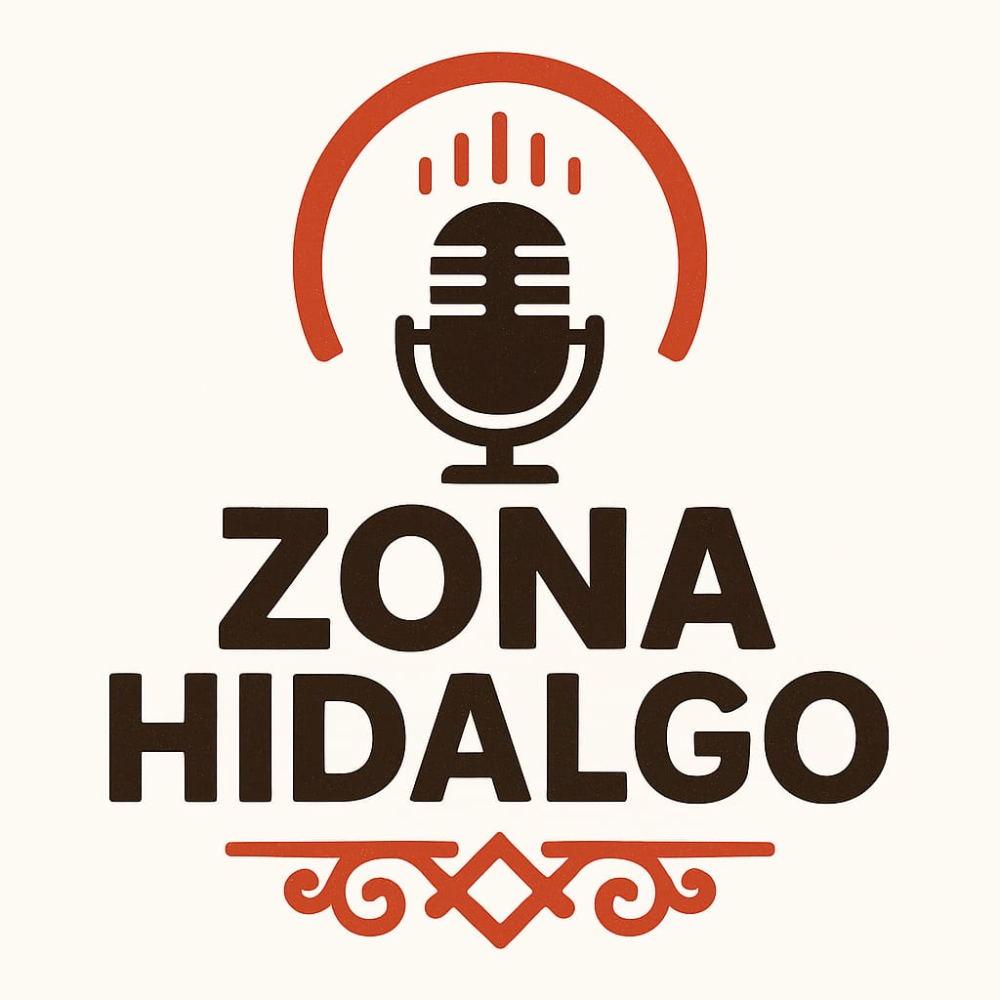
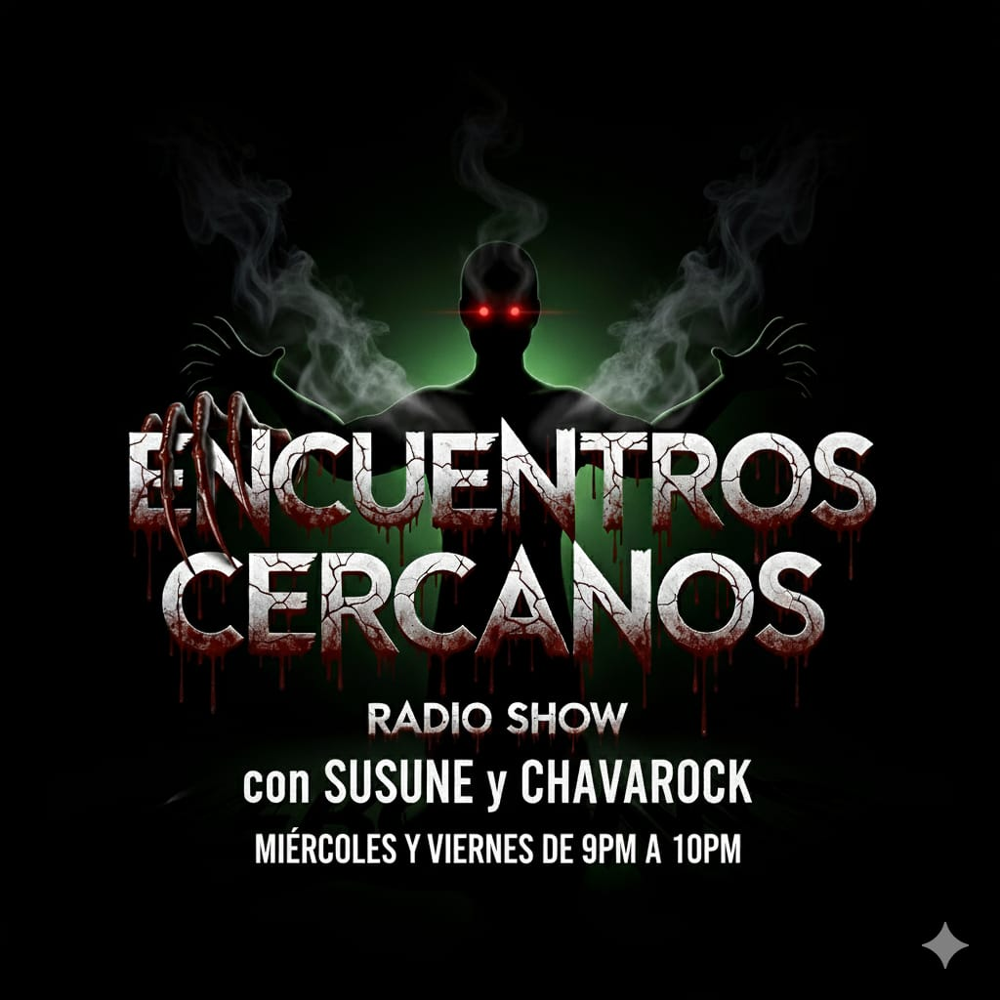
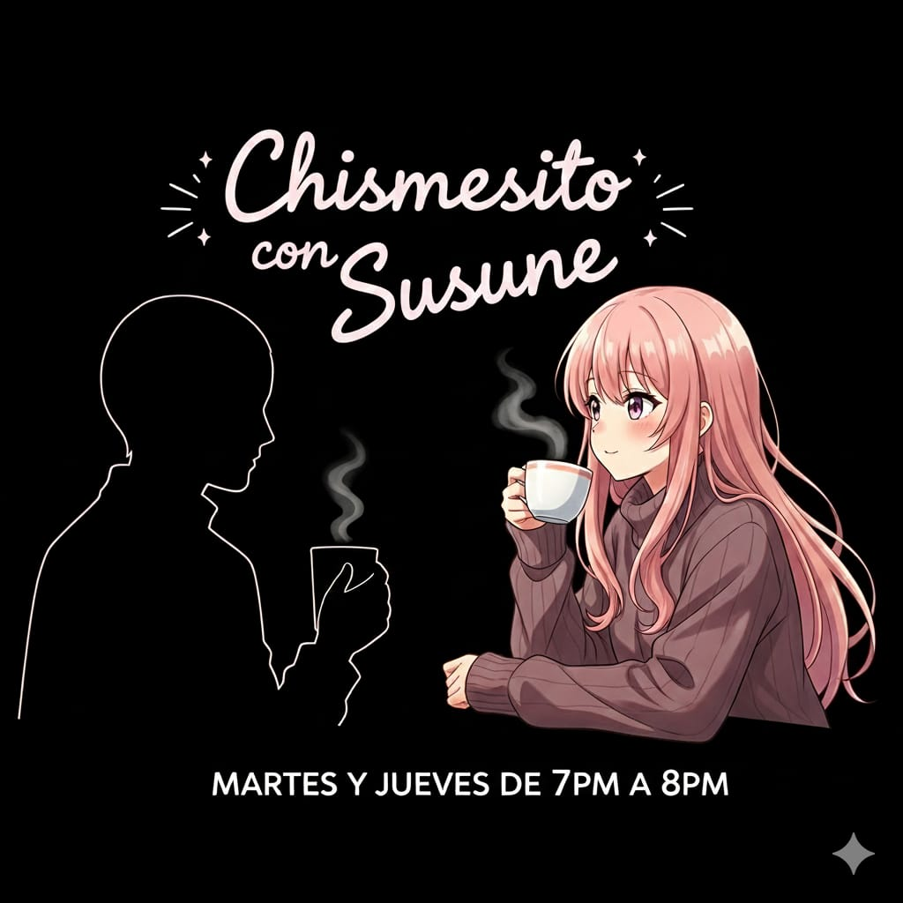
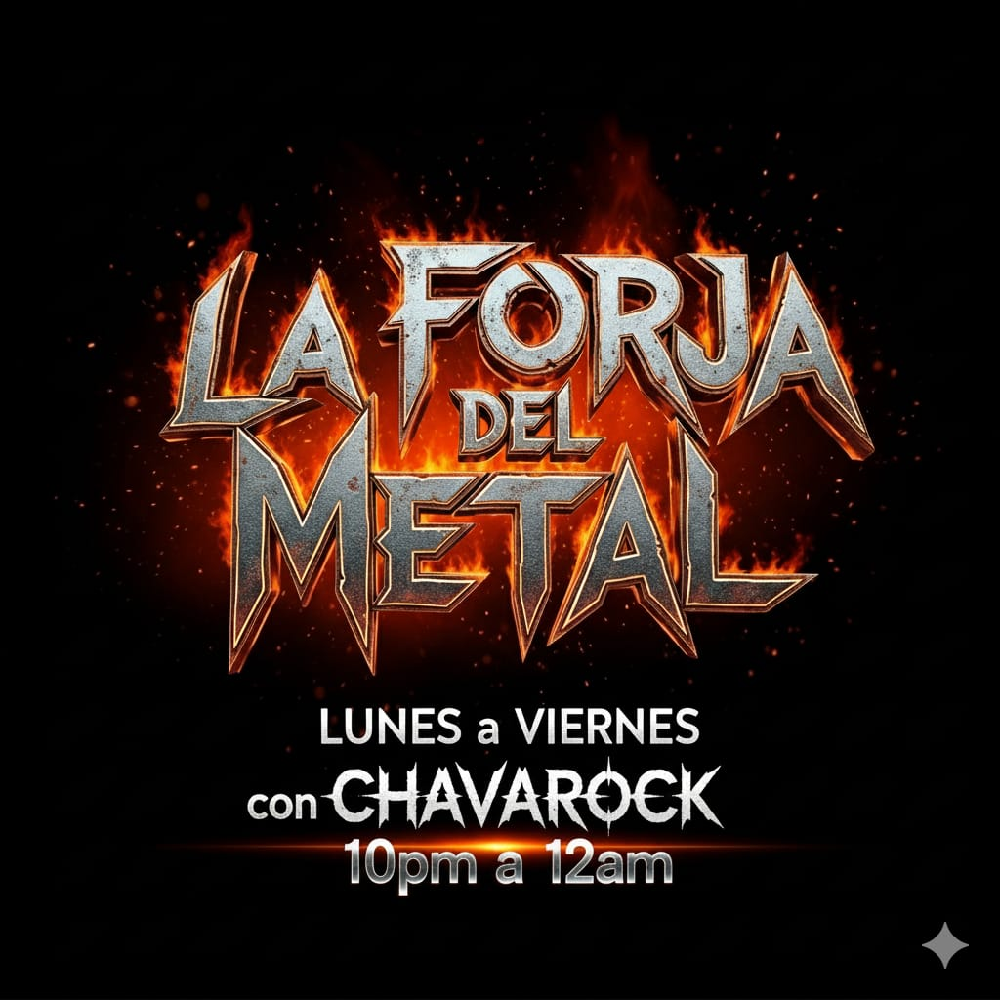
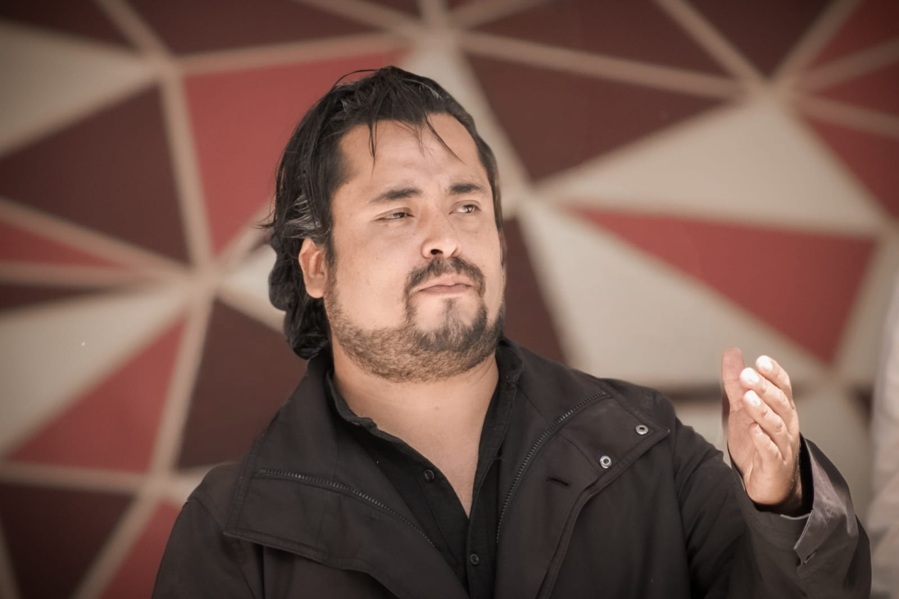

ZONA HIDALGOMúsica, cultura y entretenimiento 24/7



Zona Hidalgo estación de radio independiente transmitiendo desde Tepeapulco Hidalgo, con el respaldo de Producciones Escénicas Y... ¿Por qué No?, con el actor Argel Jovanny Zamora Lozano y el director Salvador Aguayo. Transmitimos las 24 horas los 365 días del año. Fundada el 1 de Septiembre del 2025.
Ser un medio de comunicación libre, crítico y plural que informa, entretiene, educa y da voz a la sociedad, promoviendo la participación ciudadana, la reflexión política, la cultura y el pensamiento crítico, mediante contenidos responsables, creativos y comprometidos con la transformación social.
Consolidarnos como una estación de radio influyente, abierta al debate y a la diversidad de opiniones, reconocida por su capacidad de generar diálogo, impulsar campañas de interés público, difundir mensajes sociales, culturales y políticos, y contribuir activamente a una sociedad más consciente, informada y participativa.

Tel: 7751641031
Correo: zonahidalgo38@gmail.com